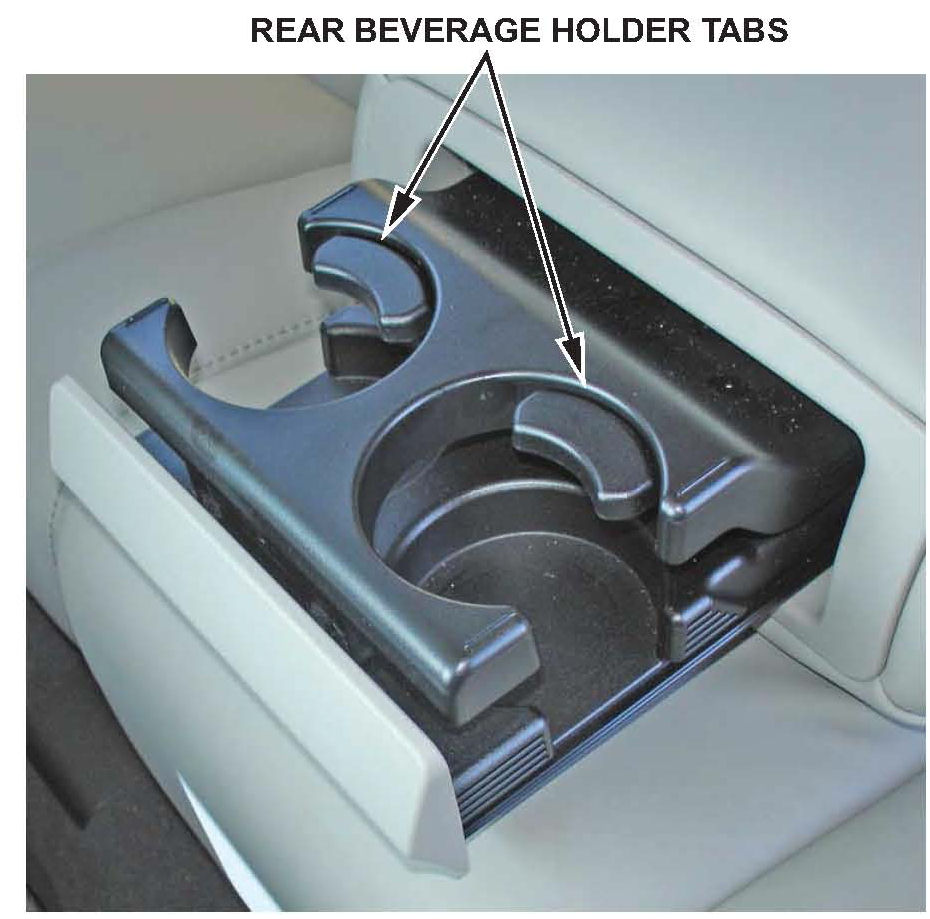

Interior -2nd Row/Rear Seat Beverage Holder Inoperative
08-024October 5, 2012
Applies To:
2007-13 MDX - ALL
2005-12 RL - ALL
Second Row Seat or Rear Seat Beverage Holder Does Not Work
(Supersedes 08-024, dated September 14, 2010; see Revision Summary)
REVISION SUMMARY
*^ In Applies To, model years were added.
^ Under PARTS INFORMATION, the parts numbers were updated.
^ Under WARRANTY CLAIM INFORMATION, the Flat Rate Time was changed.*
SYMPTOM
The beverage holder is stuck closed or binds when opening or closing, or the tab in the beverage holder is broken.
PROBABLE CAUSES
Several causes can lead to the beverage holder not working properly:
^ There is sticky residue from soda, juice, or other liquid spilled in the beverage holder.
^ An small toy or other object is jamming the beverage holder.
^ At least one beverage holder tab is broken.
CORRECTIVE ACTION
Depending on your diagnosis, clean the beverage holder or replace it.
PARTS INFORMATION
TOOL INFORMATION
KTC Trim Tool Set: T/N SQJATP2014
WARRANTY CLAIM INFORMATION
The normal warranty applies.
NOTE:
The warranty claim information applies to REPAIR PROCEDURE A only. REPAIR PROCEDURE B is client pay because external causes contributed to the beverage holder not working properly.
Operation Number: 044100
*Flat Rate Time: 0.2 hour*
Failed Part: P/N 82183-STX-A02ZD
Defect Code: 01801
Symptom Code: 01201
DIAGNOSIS
1. Carefully try to open the beverage holder. If the holder is stuck closed, try to pry it open.

2. Inspect the beverage holder for evidence of spilled drinks, jammed items, or a broken tab.
^ If the beverage holder tab is broken, go to REPAIR PROCEDURE A.
NOTE:
The broken tab applies to all 2007 MDX models and 2008 MDX models through VIN 2HNYD28..8H517815 only.
REPAIR PROCEDURE A
1. Detach the hooks, then remove the beverage holder cover.
2. Remove the screws, then pull out the beverage holder to release the hooks.
3. Install a new beverage holder using the existing screws and cover.
REPAIR PROCEDURE B
NOTE:
This repair is not covered under warranty because the cause is not a manufacturing defect.
1. Remove the beverage holder:
^ Detach the hooks, then remove the beverage holder cover.
^ Remove the screws, then pull out the beverage holder to release the hooks.
2. Inspect the beverage holder for small toys or similar objects that may be jammed in it.
3. Wash the beverage holder with soap and water, then dry it with compressed air. Check that the holder slides smoothly.
4. Reinstall the beverage holder, the screws, and the cover.

Disclaimer